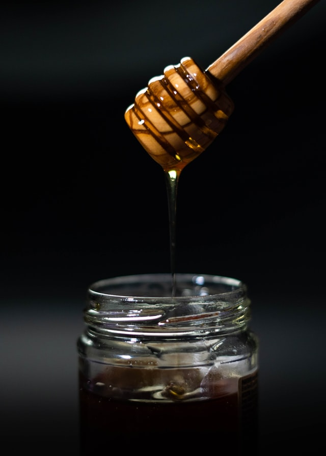
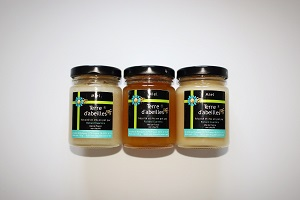
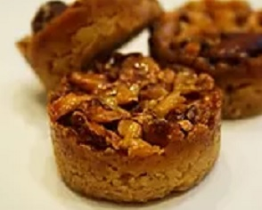

C'est avant tout une histoire de famille : Père et fille ont
décidé d'allier leurs compétences afin de vous proposer des
produits de qualité autour du miel.
Richard, le père, récolte avec passion des miels
locaux et non chauffés.
Sa fille, Emeline, pâtissière-chocolatière,
intègre ce délicieux nectar à ses gourmandises pour le plus grand
plaisir de vos papilles !
Venez vite à la rencontre de ces deux passionnés !

Notre offre
Terre d'abeilles produit une gamme de miels de qualité, nos chauffés
afin de garantir la conservation de toutes leurs qualités gustatives
et thérapeutiques naturelles.
Nous utilisons notre miel sans transformation pour élaborer nos
pâtisseries, mais aussi certaines glaces et sorbets, le tout sans
additif.
Notre compétence d'apiculteur nous permet aussi de partager notre
passion des abeilles avec vous, et de vous aider à vivre avec des
petites bêtes !

le miel
Pots 125 g / 250g / 500g
Tous nos miels sont disponibles en pot de 125grs, 250grs ou
500grs. Aucun d'entre eux n'est chauffé afin de préserver au
maximum leurs caractéristiques nutritionnelles.

les gourmandises
Biscuits, glaces, au miel !
Toutes nos gourmandises sont à base du miel de châtaigner
Terre d'abeilles. Elles sont élaborées de manière artisanale
sans colorant, conservateur ni arôme artificiel.